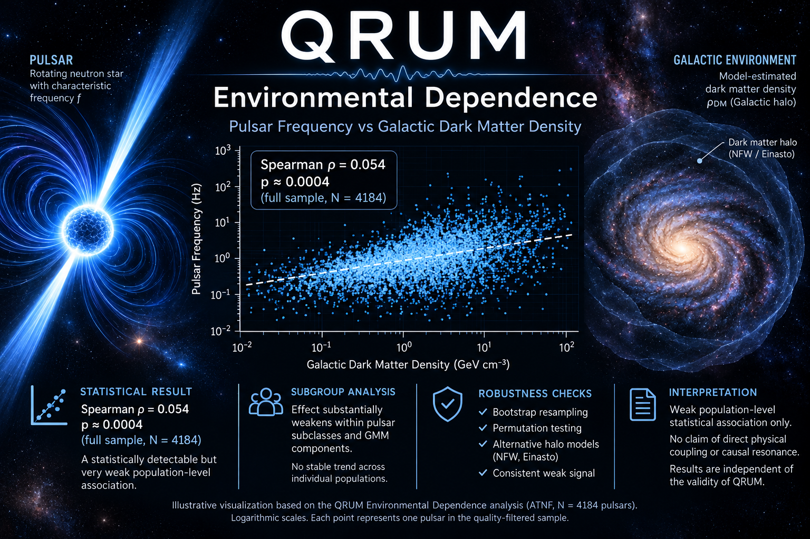
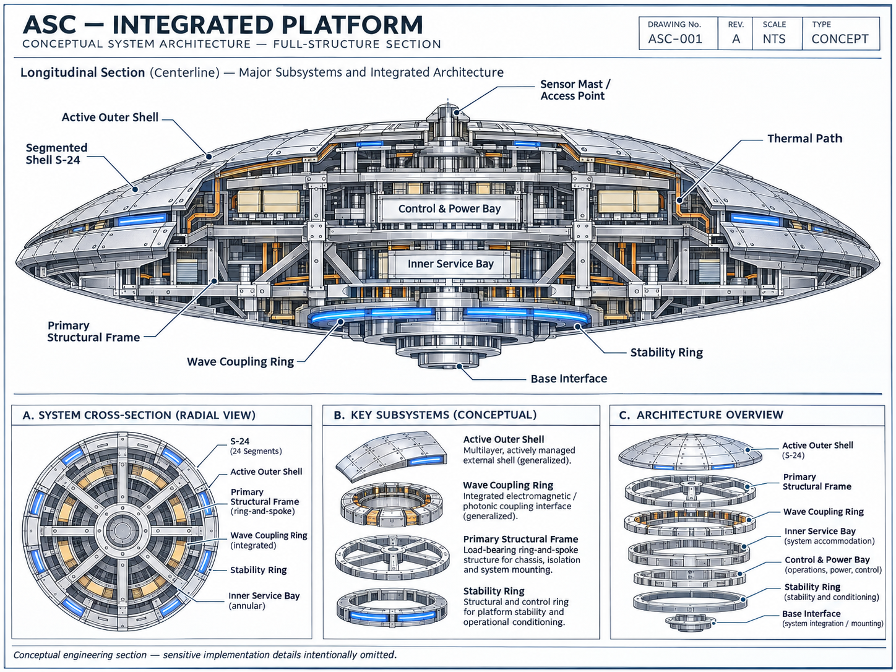
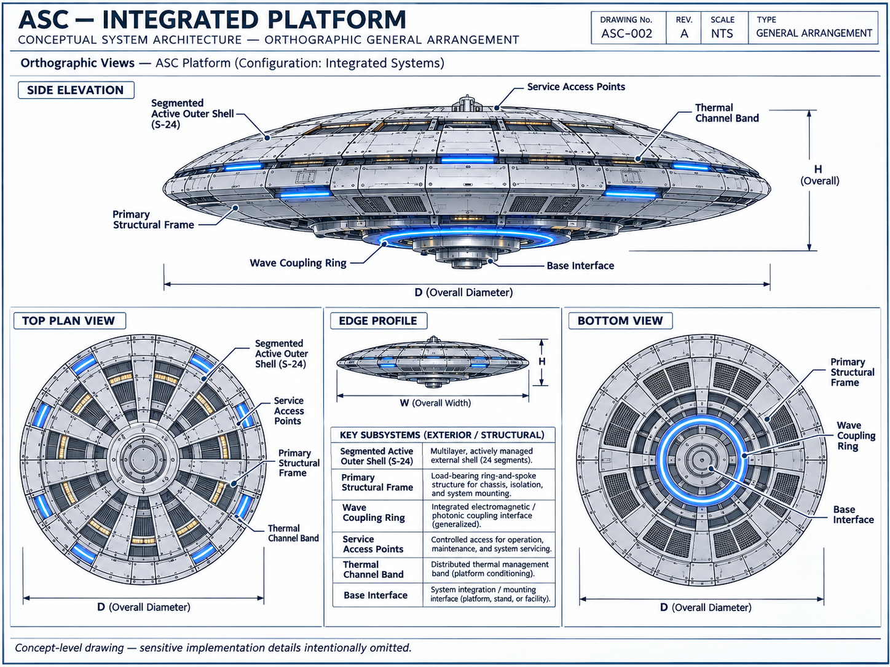
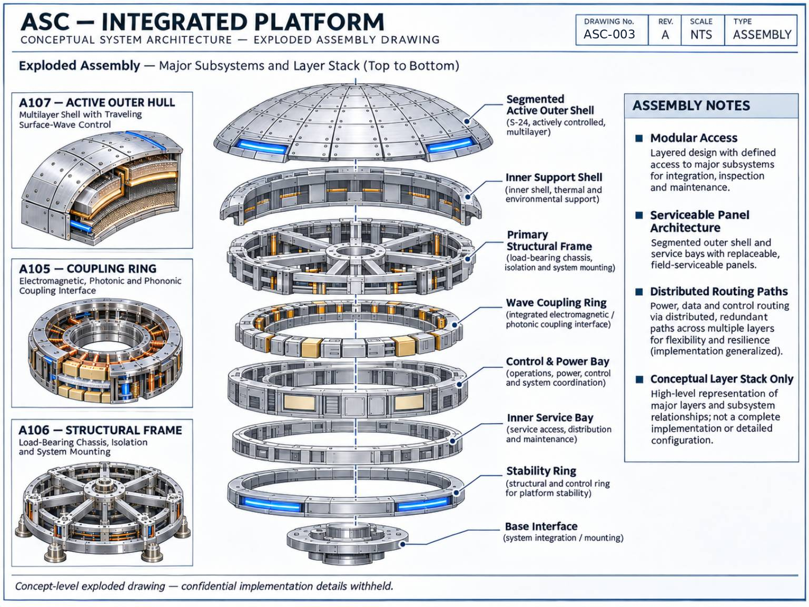
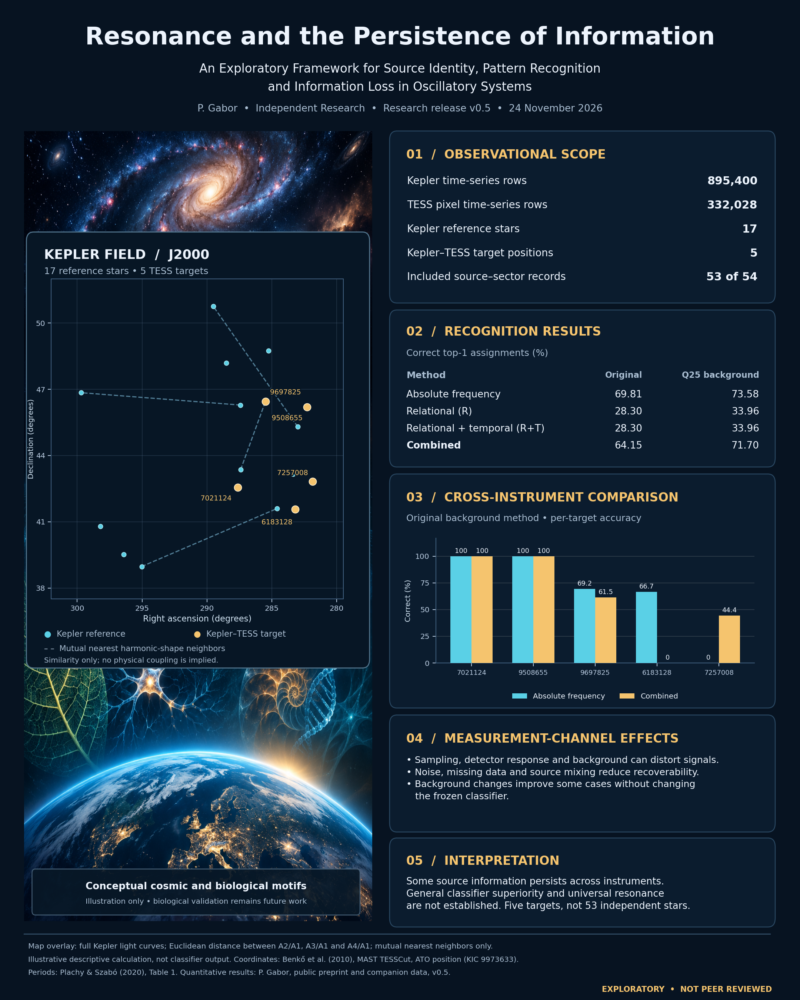

Environmental Dependence
Pulsar frequency versus galactic dark matter density. Exploratory statistical analysis.
View publication on Zenodo →Independent research programme focused on testable and reproducible investigations of frequency-dependent patterns and residual effects in astrophysical and physical data.
P. Gabor (Palásti Gábor) is an independent researcher and the originator of the Quantum Resonance Unified Model (QRUM) research programme. He has a technical educational background.
QRUM is developed as an exploratory phenomenological framework intended to generate testable questions rather than to assume the validity of a new fundamental theory.
The research programme emphasizes falsifiability, transparent statistical analysis, open data, reproducible computational workflows and independent verification.
Gravitational-wave residual analysis
Compact-object frequency statistics
Astrophysical environmental correlations
Precision metrology
Optical atomic clocks
Reproducible scientific computing
P. Gabor (Gábor Palásti) | 14 October 2026
Foundational hypothesis, research programme, authorship and scientific provenance documentation.
Phenomenological formulation of QRUM together with an exploratory residual analysis of publicly available gravitational-wave strain data. The study includes reproducible computational methods for independent evaluation.
A prospective experimental framework for testing weak frequency-dependent residual effects using high-precision optical atomic clocks, with emphasis on sensitivity, controls, reproducibility and falsifiability.
A statistical survey of compact-object frequency distributions across multiple astrophysical populations. QRUM is retained as a possible interpretative framework and is not assumed or claimed to be established by the statistical results.
A reproducible correlation-based framework using synchronized gravitational-wave detector pairs, cross-correlation, residual spectral analysis and bootstrap validation with public data and open-source methods.
An observational investigation of the relationship between pulsar characteristic frequencies and Galactic dark matter density within the QRUM phenomenological research programme.
Consolidated overview of the QRUM research programme and its phenomenological development.
The QRUM research programme is developed using open scientific resources wherever possible. Public gravitational-wave data, transparent statistical procedures and open-source reference implementations are used to make the analyses independently inspectable and reproducible.
Null results and inconclusive results are scientifically meaningful outcomes. Independent reproduction, methodological criticism and attempts at falsification are welcome.
Source code and supporting materials: QRUM GitHub repository
Public Engineering Research Release v0.6 – November 22, 2026
Active Surface Coupling (ASC) is an independently developed conceptual engineering research proposal. The public v0.6 release includes engineering documentation, reproducible numerical modelling materials, and conceptual system illustrations. The numerical results are conditional on their stated assumptions and do not establish experimentally validated propulsion performance.
The computational examples are provided for independent inspection and testing. They do not constitute experimental validation or demonstrate the feasibility of an operational ASC system.
This publication is a limited public disclosure of a broader research project. Additional research documentation and certain implementation details are not publicly released.
Read the ASC publication on Zenodo
GitHub — Source code and reproducibility materials
Engineering illustrations are AI-generated conceptual visualizations, not manufacturing-ready CAD drawings.
Three AI-generated conceptual engineering illustrations of the proposed Active Surface Coupling platform.



These illustrations are AI-generated conceptual visualizations, not validated engineering or manufacturing drawings.
Public Research Release v0.5 — November 24, 2026
An Exploratory Framework for Source Identity, Pattern Recognition and Information Loss in Oscillatory Systems
This independent research framework investigates how structured information may remain identifiable within oscillatory signals, including individual sources and composite signal environments. The original MRIT methodology is retained within the broader research framework.
The public research release includes:

Zenodo — Research Preprint and Public Release
GitHub — Source Code and Reproducibility

Visual Data Atlas v0.5 — Click to enlarge
The visual atlas is an AI-assisted research illustration. It is not independent experimental evidence.
This work is exploratory and has not been peer reviewed. No claim of a new physical force, intelligence detection, universal resonance law or classifier superiority is made. Independent inspection, replication and constructive scientific criticism are welcome.
P. Gabor — Independent Researcher, Hungary